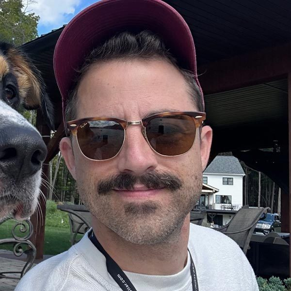

About the PI

Dr. Elliott Arnold
Dr. T. Elliott Arnold is an organic geochemist and Assistant Professor in the Department of Earth and Space Sciences at West Chester University. He is the director of the West Chester University Geochemistry Lab. The lab uses molecular biomarkers and stable isotopes preserved in lake sediments to reconstruct past climate and environmental change, from drought and the decline of the Tiwanaku civilization in the Andes to the effects of North Atlantic Heinrich events on subtropical climate. Closer to home, the lab tracks microplastic and heavy-metal pollution in streams and soils across the Chesapeake and Delaware Bay watersheds, with many projects led by undergraduate and graduate students. Dr. Arnold holds a B.S. from Pennsylvania State University and an M.S. and Ph.D. from the University of Florida, and was a postdoctoral researcher and lab manager at the University of Pittsburgh.
Education
Ph.D., University of Florida
M.S., University of Florida
B.S., Pennsylvania State University
Appointments
Assistant Professor, Earth and Space Sciences, West Chester University, 2022–present
Postdoctoral Researcher and Lab Manager, University of Pittsburgh, 2018–2022
Contact
Email: tarnold2@wcupa.edu
Office: 217 Merion Science Center
CV (PDF) · Google Scholar · ORCID